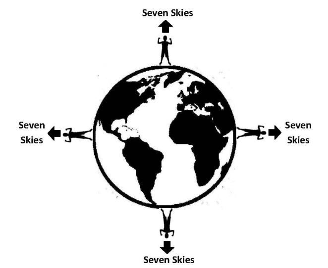

In the Quran, ―Samawaat‖ (Skies) or ―Samawaat-wal- Ard‖ (Skies and Lands) means the ―universe‖. However, in some of the verses, ―Samawaat‖ (Skies) mean complete universe except the Earth, as it is said in the following verse:
কুরআনে, "সামাওয়াত" (আকাশ) বা "সামাওয়াত-ওয়াল-আর্দ" (আকাশ ও ভূমি) অর্থ "মহাবিশ্ব"। যাইহোক, কিছু আয়াতে, "সামাওয়াত" (আকাশ) অর্থ পৃথিবী ব্যতীত সম্পূর্ণ মহাবিশ্ব, যেমনটি নিম্নলিখিত আয়াতে বলা হয়েছে:
―Say: Have ye seen ‗Partners‘ of yours whom ye call upon besides Allah? Show me what it is they have created in the land (Earth). Or have they a share in the Skies (Samawaat)?‖ [Al Quran 35:40]
বলুন, তোমরা কি তোমাদের অংশীদারদের দেখেছ যাদেরকে তোমরা আল্লাহ ব্যতীত ডাক? তারা পৃথিবীতে (পৃথিবী) কি সৃষ্টি করেছে তা আমাকে দেখান। নাকি আকাশে তাদের কোন অংশ আছে?'' [আল কুরআন ৩৫:৪০]
The following verse clarifies the Quran‘s view about the skies:
নিচের আয়াতটি আকাশ সম্পর্কে কুরআনের দৃষ্টিভঙ্গি স্পষ্ট করে:
―And built over you Seven Skies‖ [Al Quran 79:12]
"এবং তোমাদের উপর নির্মিত সাত আকাশ" [আল কুরআন 79:12]
FIGURE 2.19: And built over you Seven Skies

চিত্র 2_19 / Figure 2_19
চিত্র 2.19: এবং আপনার উপরে সাতটি আকাশ নির্মিত হয়েছে
চিত্র 2_19 / Figure 2_19
So, a man standing in India has Seven Skies over his head, and a man standing in America has Seven Skies over his head. Everybody on the spherical planet Earth has Seven Skies over his head. Therefore, the Skies should be spherical in shape, one inside another—like the peels of onion. And our Earth should be in the First / Innermost Sky.
সুতরাং, ভারতে দাঁড়িয়ে থাকা একজন ব্যক্তির মাথার উপরে সাতটি আকাশ রয়েছে এবং আমেরিকায় দাঁড়িয়ে থাকা ব্যক্তির মাথার উপরে সাতটি আকাশ রয়েছে। গোলাকার গ্রহ পৃথিবীর প্রত্যেকের মাথার উপরে সাতটি আকাশ রয়েছে। অতএব, আকাশের আকৃতি গোলাকার হওয়া উচিত, একটির ভিতরে একটি-পেঁয়াজের খোসার মতো। এবং আমাদের পৃথিবী প্রথম / অন্তঃস্থ আকাশে থাকা উচিত।
3d. Construction of the Skies
3 ডি. আকাশ নির্মাণ
Space is void filled with the extended elementary souls (force fields / ruhs) of Allah. The elementary souls are designed to sustain the matter and energies. So, the accumulation of matter in a point should increase the intensity of His extended elementary souls. For example, the gravitational force (an extended elementary soul of Allah) is higher in an object where the amount of matter is higher. So, the wavy distribution of matter in the universe has curved the space into skies. The Following verses describe the 'formation of skies' and the 'distribution of matter' as related affairs:
মহাকাশ আল্লাহর বর্ধিত প্রাথমিক আত্মা (ফোর্স ফিল্ড/রুহস) দ্বারা পূর্ণ। প্রাথমিক আত্মাগুলি বিষয় এবং শক্তি বজায় রাখার জন্য ডিজাইন করা হয়েছে। সুতরাং, একটি বিন্দুতে পদার্থের জমা হওয়া উচিত তাঁর বর্ধিত প্রাথমিক আত্মার তীব্রতা বৃদ্ধি করা। উদাহরণস্বরূপ, মহাকর্ষ বল (আল্লাহর একটি বর্ধিত প্রাথমিক আত্মা) একটি বস্তুতে বেশি যেখানে পদার্থের পরিমাণ বেশি। সুতরাং, মহাবিশ্বে পদার্থের তরঙ্গায়িত বন্টন স্থানটিকে আকাশে বাঁকা করেছে। নিম্নলিখিত আয়াতগুলি 'আকাশের গঠন' এবং 'পদার্থের বন্টন' সম্পর্কিত বিষয় হিসাবে বর্ণনা করে:
―… He said to it (smoke) and to the lands, ―Come both of you willingly or unwillingly.‖ They both said, ―We do come in willing obedience.‖ So, He completed them as Seven Skies in two days and inspired in each Sky its affairs…‖ [Al Quran 41: 11-12]
"... তিনি তাকে (ধোঁয়া) এবং জমিগুলিকে বললেন, "তোমরা উভয়েই স্বেচ্ছায় বা অনিচ্ছায় এসো।" তারা উভয়েই বলল, "আমরা স্বেচ্ছায় আনুগত্য নিয়ে এসেছি।" সুতরাং, তিনি তাদের সাত আসমান হিসাবে দুই দিনে সম্পূর্ণ করলেন এবং প্রতিটি আকাশে তার বিষয়গুলি অনুপ্রাণিত করলেন।
3e. Structures revealing the Skies
3ই. আকাশকে প্রকাশ করে এমন কাঠামো
The Skies are waves of space, one inside another—like the peels of onion. Allah has shaped the space into Skies for the balanced expansion of the universe mainly. In the followings, I have discussed walls, filaments, voids, etc. The distribution of walls and filaments and voids indicates the existence of Skies.
আকাশ হল মহাকাশের তরঙ্গ, একটার ভিতরে একটা-পেঁয়াজের খোসার মত। মহাবিশ্বের সুষম সম্প্রসারণের জন্য আল্লাহ মহাকাশকে আকাশে রূপ দিয়েছেন। নিম্নলিখিতগুলিতে, আমি দেয়াল, ফিলামেন্ট, শূন্যতা ইত্যাদি নিয়ে আলোচনা করেছি। দেয়াল এবং ফিলামেন্ট এবং শূন্যতার বন্টন আকাশের অস্তিত্ব নির্দেশ করে।
3e(1). Wall
3e(1)। প্রাচীর
Prior to 1989, the Superclusters were known as the largest structures in the Universe. The discovery of ―Great Wall‖ by Margaret Geller and John Huchra has changed the idea. The Great Wall is a sheet of galaxies 750 million light years (MLY) long, 200 million light years wide and 16 million light years thick. A Wall can span billions of light years. Superclusters are now understood to be subordinates to enormous Walls or Sheets. The Hercules Corona Borealis Great Wall (Her–CrB GW) is the largest wall discovered so far (2013). The wall measures more than 10 billion light years in length. It is 7.2 billion light-years wide and only 900 million light-years thick. It is located in the direction of constellations Hercules and Corona Borealis at a distance of 10 billion light-years, approximately. Another great concentration, CCLQG, is about 9.5 billion light years away in the direction of Leo. The wall is 2 billion light-years in length and about 1 billion light years in width. The CCLQG may be a part of the Huge- LQG. They are 1.8 billion light years away from each other. The Huge-LQG is 4 billion light years across. Coma Wall, Sloan Wall, Sculptor Wall, Grus Wall, Fornax Wall, etc., are some of the enormous walls. 3e(2). Filaments
1989 সালের আগে, সুপারক্লাস্টারগুলি মহাবিশ্বের বৃহত্তম কাঠামো হিসাবে পরিচিত ছিল। মার্গারেট গেলার এবং জন হুচরার "মহান প্রাচীর" আবিষ্কার ধারণাটি পরিবর্তন করেছে। গ্রেট ওয়াল 750 মিলিয়ন আলোকবর্ষ (MLY) দীর্ঘ, 200 মিলিয়ন আলোকবর্ষ চওড়া এবং 16 মিলিয়ন আলোকবর্ষ পুরু ছায়াপথের একটি শীট। একটি প্রাচীর কোটি কোটি আলোকবর্ষ বিস্তৃত হতে পারে। সুপারক্লাস্টার এখন বিশাল দেয়াল বা চাদরের অধীনস্থ বলে বোঝা যায়। হারকিউলিস করোনা বোরিয়ালিস গ্রেট ওয়াল (Her–CrB GW) এখন পর্যন্ত আবিষ্কৃত সবচেয়ে বড় প্রাচীর (2013)। প্রাচীরটির দৈর্ঘ্য 10 বিলিয়ন আলোকবর্ষেরও বেশি। এটি 7.2 বিলিয়ন আলোকবর্ষ প্রশস্ত এবং মাত্র 900 মিলিয়ন আলোকবর্ষ পুরু। এটি প্রায় 10 বিলিয়ন আলোকবর্ষ দূরত্বে হারকিউলিস এবং করোনা বোরিয়ালিস নক্ষত্রপুঞ্জের দিকে অবস্থিত। আরেকটি মহান ঘনত্ব, CCLQG, লিওর দিক থেকে প্রায় 9.5 বিলিয়ন আলোকবর্ষ দূরে। প্রাচীরটির দৈর্ঘ্য 2 বিলিয়ন আলোকবর্ষ এবং প্রস্থ প্রায় 1 বিলিয়ন আলোকবর্ষ। CCLQG বিশাল- LQG-এর একটি অংশ হতে পারে। তারা একে অপরের থেকে 1.8 বিলিয়ন আলোকবর্ষ দূরে। বিশাল-LQG 4 বিলিয়ন আলোকবর্ষ জুড়ে। কোমা ওয়াল, স্লোয়ান ওয়াল, স্কাল্পটর ওয়াল, গ্রাস ওয়াল, ফরনাক্স ওয়াল প্রভৃতি কয়েকটি বিশাল দেয়াল। 3e(2)। ফিলামেন্টস
The Filaments are largest known structures in the Universe. These are thread like structures with typical lengths of 50 to 80 h-1 mega parsecs, formed out of gravitationally bound galaxies. Parts of a Filament where large numbers of galaxies are very close to each other are known as Superclusters. The Filaments are seen around the boundaries of voids. Followings are examples of the Filaments: The Perseus-Pegasus Filament: It connects the Pisces- Centus Supercluster with the Perseus-Pisces Supercluster. The Coma Filament: The Coma Supercluster lies within the Coma Filament. It forms part of CfA2 Great wall.
ফিলামেন্টগুলি মহাবিশ্বের বৃহত্তম পরিচিত কাঠামো। এগুলি হল থ্রেডের মতো কাঠামো যার সাধারণ দৈর্ঘ্য 50 থেকে 80 h-1 মেগা পার্সেক, যা মহাকর্ষীয়ভাবে আবদ্ধ ছায়াপথ থেকে গঠিত। একটি ফিলামেন্টের অংশ যেখানে বিপুল সংখ্যক ছায়াপথ একে অপরের খুব কাছাকাছি থাকে তারা সুপারক্লাস্টার নামে পরিচিত। ফিলামেন্টগুলি শূন্যতার সীমানার চারপাশে দেখা যায়। নিচে ফিলামেন্টের উদাহরণ: পার্সিয়াস-পেগাসাস ফিলামেন্ট: এটি পার্সিয়াস-মীন সুপারক্লাস্টারের সাথে মীন-সেন্টাস সুপারক্লাস্টারকে সংযুক্ত করে। কোমা ফিলামেন্ট: কোমা সুপারক্লাস্টার কোমা ফিলামেন্টের মধ্যে অবস্থিত। এটি CfA2 গ্রেট প্রাচীরের অংশ গঠন করে।
3e(3). Voids
3e(3)। শূন্যতা
In more recent studies, the universe appears as a collection of giant bubble-like voids separated by walls and filaments. This network is clearly visible in the 2dF Galaxy Red Shift Survey. The Voids occur on the scale of 100 MPC. In 2007, a super void was discovered in the constellation Eridanus. It coincides with WMAP cold spot. To cause a cold spot in the microwave sky, a void would have to be improbably huge, possibly a billion light years across, which does not favor current cosmological model. Some of the voids of the near universe are: Capricornus Void, Sculptor Void, Bootes Void, Culumba Void, Canes Major Void, Corona Borealis Void, Microscopium Void, etc.
আরও সাম্প্রতিক গবেষণায়, মহাবিশ্বকে দেয়াল এবং ফিলামেন্ট দ্বারা পৃথক করা বিশাল বুদবুদের মতো শূন্যতার সংগ্রহ হিসাবে দেখা যাচ্ছে। এই নেটওয়ার্কটি 2dF Galaxy Red Shift সার্ভেতে স্পষ্টভাবে দৃশ্যমান। শূন্যতা 100 MPC স্কেলে ঘটে। 2007 সালে, এরিডানাস নক্ষত্রমণ্ডলে একটি সুপার শূন্যতা আবিষ্কৃত হয়েছিল। এটা WMAP কোল্ড স্পট সঙ্গে মিলে যায়. মাইক্রোওয়েভ আকাশে একটি ঠাণ্ডা স্থান সৃষ্টি করতে, একটি শূন্যতাকে সম্ভবত বিশাল হতে হবে, সম্ভবত এক বিলিয়ন আলোকবর্ষ জুড়ে, যা বর্তমান মহাজাগতিক মডেলের পক্ষে নয়। কাছাকাছি মহাবিশ্বের কিছু শূন্যতা হল: ক্যাপ্রিকর্নাস শূন্যতা, ভাস্কর শূন্যতা, বুটস শূন্যতা, কুলম্বা শূন্যতা, ক্যানেস মেজর শূন্যতা, করোনা বোরিয়ালিস শূন্যতা, মাইক্রোস্কোপিয়াম শূন্যতা ইত্যাদি।
3e(4). The Great Attractor
3e(4)। মহান আকর্ষক
The Great Attractor is an immensely powerful gravitational anomaly that appears in the direction of Centaurus at about 200 million light years from the Earth. All galaxies within a radius of 250 million light years are flowing toward the Great Attractor on the order of 600 km/Sec. The large-scale streaming motion is super-imposed on Hubble‘s flow. The streaming motion includes the Virgo cluster (including our galaxy), the Hydra-Centaurus Super Cluster, and other clusters. A mass of 1016 suns would account for such a powerful attraction. Detail search by astronomers of that region of the sky finds ten times too little visible matter. But, the Great Attractor is certainly there, as its gravitational influence is clearly visible. The Core of the Great Attractor is in the Norma Supercluster. [The cause of the streaming motion may be Shapley Concentration as well. It is in the same direction, but at a greater distance]
গ্রেট অ্যাট্রাক্টর হল একটি অত্যন্ত শক্তিশালী মহাকর্ষীয় অসঙ্গতি যা পৃথিবী থেকে প্রায় 200 মিলিয়ন আলোকবর্ষে সেন্টোরাসের দিকে প্রদর্শিত হয়। 250 মিলিয়ন আলোকবর্ষের ব্যাসার্ধের সমস্ত ছায়াপথগুলি 600 কিমি/সেকেন্ডের ক্রমে গ্রেট অ্যাট্রাক্টরের দিকে প্রবাহিত হচ্ছে। বৃহৎ-স্কেল স্ট্রিমিং গতি হাবলের প্রবাহের উপর অতি-চাপানো হয়। স্ট্রিমিং মোশনের মধ্যে রয়েছে কুমারী ক্লাস্টার (আমাদের গ্যালাক্সি সহ), হাইড্রা-সেন্টোরাস সুপার ক্লাস্টার এবং অন্যান্য ক্লাস্টার। 1016 সূর্যের ভর এই ধরনের একটি শক্তিশালী আকর্ষণের জন্য দায়ী। আকাশের সেই অঞ্চলের জ্যোতির্বিজ্ঞানীদের দ্বারা বিশদ অনুসন্ধানে দশগুণ খুব কম দৃশ্যমান পদার্থ পাওয়া যায়। কিন্তু, গ্রেট অ্যাট্রাক্টর অবশ্যই আছে, কারণ এর মহাকর্ষীয় প্রভাব স্পষ্টভাবে দৃশ্যমান। গ্রেট অ্যাট্রাক্টরের মূলটি নরমা সুপারক্লাস্টারে রয়েছে। [স্ট্রিমিং গতির কারণ শ্যাপলি ঘনত্বও হতে পারে। এটি একই দিকে, তবে আরও বেশি দূরত্বে]
3f. Observational Evidences
3চ. পর্যবেক্ষণমূলক প্রমাণ
Cosmologists see near galaxies only. Those at great distances are too faint to be visible even with the most powerful telescopes. And it is difficult to perceive the distance. With painstaking efforts, cosmologists have collected enough data of the near universe, which show us up to 2nd / 3rd Sky. Figure 2.20 below is drawn with the data collected by NASA. I have drawn a probable boundary between the First Sky and the Second Sky. The Great Attractor is put in the Center of the First (Innermost) Sky. The distribution of matter reveals the Skies as spherical waves of space, one inside another—like the peels of onion.
কসমোলজিস্টরা শুধুমাত্র গ্যালাক্সির কাছাকাছি দেখতে পান। যারা অনেক দূরত্বে আছে তারা সবচেয়ে শক্তিশালী টেলিস্কোপ দিয়েও দৃশ্যমান হতে পারে না। এবং দূরত্ব উপলব্ধি করা কঠিন। শ্রমসাধ্য প্রচেষ্টায়, কসমোলজিস্টরা কাছাকাছি মহাবিশ্বের যথেষ্ট তথ্য সংগ্রহ করেছেন, যা আমাদেরকে ২য়/৩য় আকাশ পর্যন্ত দেখায়। নিচের চিত্র 2.20টি NASA দ্বারা সংগৃহীত তথ্য দিয়ে আঁকা হয়েছে। আমি প্রথম আকাশ এবং দ্বিতীয় আকাশের মধ্যে একটি সম্ভাব্য সীমারেখা এঁকেছি। গ্রেট অ্যাট্রাক্টরকে প্রথম (অন্তঃস্থ) আকাশের কেন্দ্রে রাখা হয়েছে। পদার্থের বন্টন আকাশকে মহাকাশের গোলাকার তরঙ্গ হিসাবে প্রকাশ করে, একটির ভিতরে একটি - পেঁয়াজের খোসার মতো।
FIGURE 2.20: Likely First and Second Sky 3f(1). The First (Innermost) Sky

চিত্র 2_20 / Figure 2_20
চিত্র 2.20: সম্ভবত প্রথম এবং দ্বিতীয় আকাশ 3f(1)। প্রথম (অন্তঃস্থ) আকাশ
চিত্র 2_20 / Figure 2_20
We are in the First / Innermost sky in light of the Quran:
কুরআনের আলোকে আমরা প্রথম/ অন্তরতম আকাশে আছি:
―And built over you the Seven Skies‖ [Al Quran 79:12]
"এবং তোমাদের উপর নির্মিত হয়েছে সাত আকাশ" [আল কুরআন 79:12]
Quasars are among the oldest known objects in the universe. Some of them have been observed at distances of around 28 billion light-years away. They are visible due to their extraordinary brightness. Quasars at such distances appear to be evenly distributed in all directions of space and exhibit a redshift indicating they are receding straight backward. This suggests that our vantage point is situated within the innermost region of the universe, can be referred to as the 'First Sky'. The First Sky contains the Centaurus Super-cluster with its extensions like Hydra extension, Virgo Extension, Pavo Extension, Norma Supercluster, and Fornax Wall. The Great Attractor is the center of the First Sky (see fig. 2.20). The gravity exerted by the Great Attractor is so powerful that all objects in the First Sky are drawn towards it. This gravitational pull can be understood as the tendency of matter to move along curved space-time. Consequently, from the periphery of the First Sky, space slopes down towards the center where the Great Attractor is located. In other words, the fabric of space is denser at the center of the First Sky, and as one moves towards the edge, the fabric of space becomes thinner. The Great Attractor does not necessarily require a mass equivalent to 1016suns to generate a gravitational force capable of pulling objects from distances as far as 250 million light-years away. Instead, galaxies are drawn towards its direction due to the inherent structure of space formed by the overall distribution of matter within the First (Innermost) Sky. The First Sky is the core sky of the universe. Here the galaxies should concentrate in the form of supercluster. In the outer skies, they would form walls / sheets. However, the Centaurus supercluster with its extensions looks like a wall (Centaurus wall). But, it is a circular concentration with Norma supercluster in the center. The Great Attractor is located in the Norma supercluster. As Norma supercluster is falling rapidly into the Great Attractor, it is associated with a small ―Finger of God Effect‖ in the plots of galactic red-shift velocities when viewed from the perspective of the Solar System. The ―Finger of God‖ is an effect where distribution of galaxies is elongated in red-shift space with the axis of elongation pointed toward the Solar System. It is caused by a Doppler shift associated with the random peculiar velocities of galaxies. In case of Norma Finger of God, the galaxies in the far side of Great Attractor are blue-shifted and galaxies of the near side are red-shifted producing a small Finger of God in the line of sight. All matter within a radius of approximately 250 million light-years is being drawn towards the Great Attractor. Therefore, the radius of the First Sky should be around 300 million light-years, which includes adding half of the width of the surrounding belt of voids (250 + 50).
কোয়াসারগুলি মহাবিশ্বের প্রাচীনতম পরিচিত বস্তুগুলির মধ্যে একটি। তাদের মধ্যে কিছুকে প্রায় 28 বিলিয়ন আলোকবর্ষ দূরত্বে পর্যবেক্ষণ করা হয়েছে। তাদের অসাধারণ উজ্জ্বলতার কারণে তারা দৃশ্যমান। এই ধরনের দূরত্বের কোয়াসারগুলি মহাকাশের সমস্ত দিকে সমানভাবে বিতরণ করা হয় এবং একটি রেডশিফ্ট প্রদর্শন করে যা নির্দেশ করে যে তারা সোজা পিছিয়ে যাচ্ছে। এটি পরামর্শ দেয় যে আমাদের সুবিধা বিন্দুটি মহাবিশ্বের সবচেয়ে ভিতরের অঞ্চলে অবস্থিত, এটিকে 'প্রথম আকাশ' হিসাবে উল্লেখ করা যেতে পারে। ফার্স্ট স্কাইতে হাইড্রা এক্সটেনশন, ভিরগো এক্সটেনশন, পাভো এক্সটেনশন, নরমা সুপারক্লাস্টার এবং ফরনাক্স ওয়াল এর মতো এক্সটেনশন সহ সেন্টোরাস সুপার-ক্লাস্টার রয়েছে। গ্রেট অ্যাট্রাক্টর হল প্রথম আকাশের কেন্দ্র (চিত্র 2.20 দেখুন)। গ্রেট অ্যাট্রাক্টর দ্বারা প্রয়োগ করা মাধ্যাকর্ষণ এত শক্তিশালী যে প্রথম আকাশের সমস্ত বস্তু তার দিকে টানা হয়। এই মহাকর্ষীয় টানকে বোঝা যায় বস্তুর বক্র স্থান-কাল বরাবর চলার প্রবণতা। ফলস্বরূপ, প্রথম আকাশের পরিধি থেকে, মহাকাশ ঢালু কেন্দ্রের দিকে নেমে আসে যেখানে গ্রেট অ্যাট্রাক্টর অবস্থিত। অন্য কথায়, ফার্স্ট স্কাইয়ের কেন্দ্রে স্থানের ফ্যাব্রিক ঘন হয় এবং প্রান্তের দিকে এগিয়ে যাওয়ার সাথে সাথে স্থানের কাপড় পাতলা হয়ে যায়। 250 মিলিয়ন আলোকবর্ষ দূরে দূরত্ব থেকে বস্তুগুলিকে টেনে আনতে সক্ষম মহাকর্ষীয় বল তৈরি করতে 1016 সূর্যের সমতুল্য ভরের প্রয়োজন হয় না। পরিবর্তে, প্রথম (অভ্যন্তরীণ) আকাশের মধ্যে পদার্থের সামগ্রিক বন্টন দ্বারা গঠিত স্থানের অন্তর্নিহিত কাঠামোর কারণে ছায়াপথগুলি তার দিকের দিকে টানা হয়। প্রথম আকাশ হল মহাবিশ্বের মূল আকাশ। এখানে ছায়াপথগুলিকে সুপারক্লাস্টার আকারে ঘনীভূত করা উচিত। বাইরের আকাশে তারা দেয়াল/চাদর তৈরি করত। যাইহোক, সেন্টোরাস সুপারক্লাস্টার এর এক্সটেনশন সহ একটি প্রাচীর (সেন্টোরাস প্রাচীর) মত দেখায়। কিন্তু, এটি কেন্দ্রে নরমা সুপারক্লাস্টার সহ একটি বৃত্তাকার ঘনত্ব। গ্রেট অ্যাট্রাক্টর নরমা সুপারক্লাস্টারে অবস্থিত। যেহেতু নরমা সুপারক্লাস্টার দ্রুত গ্রেট অ্যাট্রাক্টরে পড়ে যাচ্ছে, এটি সৌরজগতের দৃষ্টিকোণ থেকে দেখলে গ্যালাকটিক রেড-শিফ্ট বেগের প্লটে একটি ছোট "গড ইফেক্টের আঙুল" এর সাথে যুক্ত। "ঈশ্বরের আঙুল" হল একটি প্রভাব যেখানে ছায়াপথের বন্টন সৌরজগতের দিকে নির্দেশিত প্রসারণের অক্ষের সাথে লাল-শিফট স্পেসে দীর্ঘায়িত হয়। এটি ছায়াপথগুলির এলোমেলো অদ্ভুত বেগের সাথে যুক্ত একটি ডপলার পরিবর্তনের কারণে ঘটে। ঈশ্বরের নর্মা আঙুলের ক্ষেত্রে, গ্রেট অ্যাট্রাক্টরের দূরের ছায়াপথগুলি নীল-স্থানান্তরিত হয় এবং নিকটবর্তী ছায়াপথগুলি লাল-স্থানান্তরিত হয় যা দৃষ্টির রেখায় ঈশ্বরের একটি ছোট আঙুল তৈরি করে। আনুমানিক 250 মিলিয়ন আলোকবর্ষের ব্যাসার্ধের মধ্যে সমস্ত পদার্থ গ্রেট অ্যাট্রাক্টরের দিকে টানা হচ্ছে। অতএব, প্রথম আকাশের ব্যাসার্ধ প্রায় 300 মিলিয়ন আলোকবর্ষ হওয়া উচিত, যার মধ্যে শূন্যতার আশেপাশের বেল্টের প্রস্থের অর্ধেক যোগ করা অন্তর্ভুক্ত (250 + 50)।
3f(2). The Second Sky
3f(2)। দ্বিতীয় আকাশ